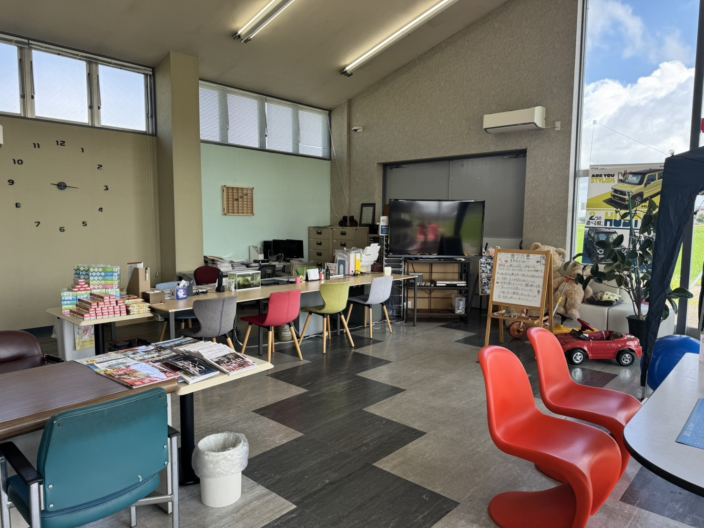

お車探しからご納車、その後の車検や修理まで。ご利用いただいたお客様からいただいたご感想を、利用シーン別にご紹介します。

ご納車のとき、車検でお預かりしたとき、修理を終えてお渡しするとき。ふとした場面でお客様からいただく言葉を、私たちはいつも大切に受け取っています。うれしいご感想はもちろん、「ここはもう少しこうしてほしい」というお声も、次のお客様のためのヒントになります。
このページでは、これまでにいただいたご感想を利用シーン別にご紹介します。お車探し、車検・整備、鈑金塗装、買取、そして急なお困りごとへの対応まで。はじめてご相談を考えていらっしゃる方に、雰囲気が少しでも伝われば幸いです。
※ 掲載内容は、お客様からいただいたご感想をもとに構成したものです。個人が特定される情報は掲載しておりません。また、お車の状態やご依頼内容によって、対応の内容や期間は異なります。
ご購入、車検・整備、鈑金塗装、買取、緊急対応など、さまざまな場面でのお声をご紹介します。
スライドドアの車を探していましたが、予算の都合でなかなか決まらず悩んでいました。条件を丁寧に聞いていただき、優先したいところと譲れるところを整理してもらえたおかげで、納得のいく一台に出会えました。急かされることがまったくなかったのがありがたかったです。
冬道が不安で4WDに乗り換えたいと相談しました。新潟の道をよくご存じで、装備の選び方まで具体的に教えていただけたのが心強かったです。納車後の最初の冬も安心して走れています。次の車検もお願いするつもりです。
希望の色とグレードを細かくお願いしたので、見つかるまで少し時間はかかりました。ただ、その間も進み具合をこまめに教えていただけたので、待っている不安はありませんでした。妥協せずに選べてよかったと思っています。
他店で買った車の車検をお願いしました。断られるかと思っていたのですが、快く受けていただけました。交換が必要な部品とまだ様子を見ていい部品を分けて説明してもらえたので、費用の見通しが立てやすかったです。
走行中に気になる音がしていたので見ていただきました。原因をその場で丁寧に説明していただき、対処の方法もいくつか示してもらえました。素人にもわかる言葉で話してくださるので、質問しやすいのがありがたいです。
冬用タイヤの交換でお世話になっています。時期によっては混み合うようですが、早めに予約すればスムーズです。ついでに気になっていた箇所も見てくださるので、毎年こちらにお願いしています。
駐車場で柱にこすってしまい、落ち込んで持ち込みました。どこまで直すかを予算と相談しながら決められたのが助かりました。仕上がりを見て、どこをぶつけたのか自分でもわからないくらいで驚きました。
事故での修理をお願いしました。保険を使う場合と使わない場合でどう違うのかを、こちらの立場で説明していただけたのが印象的でした。手続きも進めてくださって、精神的にとても楽でした。
乗り換えにあたって出張査定に来ていただきました。仕事が忙しく店舗に行く時間がなかったので、職場まで来てもらえたのは本当に助かりました。金額の根拠も説明していただけて、納得して手放せました。
金額を知りたいだけのつもりで査定をお願いしました。結局そのまま乗り続けることにしたのですが、嫌な顔ひとつされず、それどころか「まだ十分乗れますよ」と言っていただけて。次に手放すときも必ずこちらに相談します。
朝、出勤前にバッテリーが上がってしまい、慌てて電話しました。すぐに駆けつけてくださって、遅刻せずに済みました。近くにこういうお店があるというだけで、日々の安心感がまったく違います。
小さい子どもがいるので、車屋さんでゆっくり話を聞くのは難しいと思っていました。キッズスペースがあり、店内も落ち着いた雰囲気なので、夫婦でしっかり検討できました。田園の眺めも気持ちがよく、相談に行くのが楽しみでした。
どのような場面でご利用いただいているのか、いただいたお声から見えてきた傾向をまとめました。
「条件を細かく聞いてもらえた」「急かされなかった」というお声を多くいただきます。在庫から選ぶのではなく、ご希望から探す進め方が、じっくり考えたい方に合っているようです。ご家族での来店も多い場面です。
他店でご購入されたお車の車検・整備も多くお預かりしています。「必要な整備と様子見でよい箇所を分けて説明してもらえる」という点を評価いただくことが多く、費用の見通しの立てやすさにつながっているようです。
駐車時の小さなキズから事故の修理まで、幅広くご依頼いただきます。ご予算に応じて仕上げ方をご相談できる点、保険を使う場合の手続きまでお任せいただける点が、安心につながっているようです。
乗り換えにあわせた下取りのほか、金額を知るためだけの査定のご依頼もいただきます。出張査定をご利用になる方も多く、お忙しい方ほど「わざわざ行かなくてよい」点を喜んでいただいています。
バッテリー上がりや突然の不調など、急なお困りごとのご連絡も日常的にいただきます。「すぐ来てもらえた」というお声が多く、地域密着ならではの小回りが役に立っている場面です。
キッズスペースや落ち着いた店内の雰囲気について触れていただくことがよくあります。「車屋さんに入りにくい」と感じていた方にも、気兼ねなくご相談いただけているようです。
実際にご相談いただくことの多いテーマです。似たようなお悩みがあれば、どうぞお気軽にお声がけください。
お子さまの誕生やご家族の増減にあわせて、車を替えたいというご相談です。乗車人数、荷物の量、乗り降りのしやすさ、駐車場の広さなどをうかがいながら、いまの暮らしに合うかたちをご提案します。維持費の変化についてもあわせてご説明します。
新潟ならではのご相談です。駆動方式やタイヤの選び方、装備の有無で冬の走りやすさは変わります。地元で日々お車に触れている立場から、必要なところとそうでないところを分けてお伝えします。
買い替えるか、直して乗り続けるかで迷われている方は多くいらっしゃいます。点検の結果と、今後かかりそうな整備費用の見通しをお伝えしたうえで、判断の材料をご提供します。無理に買い替えをおすすめすることはありません。
ご予算のご相談です。頭金や支払回数の組み合わせ、車種の選び方、下取りの活用など、調整できる要素はいくつもあります。「毎月このくらいなら無理がない」という金額を起点に、一緒に組み立てていきます。
直すか、このままにするか。ご予算と、お車をあとどのくらい乗るご予定かによって、おすすめする方法は変わります。実際に拝見したうえで、選択肢を並べてご説明しますので、お見積りだけでもお気軽にどうぞ。
販売、整備、鈑金塗装、買取、保険。それぞれ別のお店に相談するのは大変です。当グループは3社でこれらをまるごと担っていますので、窓口はひとつ、お電話は一本で済みます。まずはお困りの内容をそのままお聞かせください。
ご購入のご相談も、車検や修理のご依頼も、「ちょっと見てほしい」だけのご連絡も。同じ窓口で承ります。
📞 0256-86-2944 受付 8:30-18:30